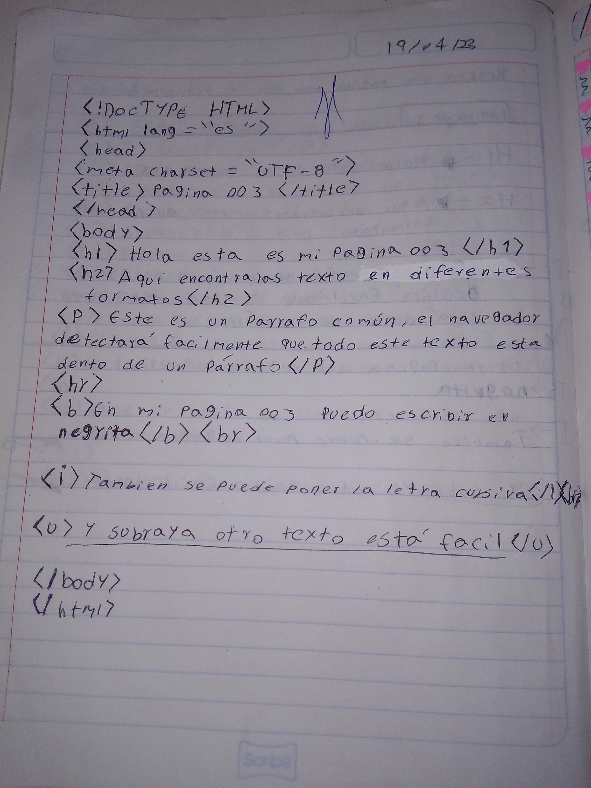
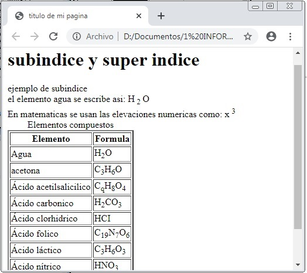

trabajos de keidy-isaabeth
en este trabajo aprendimos a poner la letras en diferentes formas
trabajo keidy
en esta aprendi como poner listas ordenadas y no ordenadas
en este trabajo puse en diferentes tipos de letras
aqui aprendi como poner encabezados

en este trabajo volvimos a trabajar con los diferentes tipos de letra
en este trabajo puse imagenes de animales
en esta pagina aprendi a poner imagenes
trabajo keidy
en esta pagina puse una imagen de un sata
trabajo isaabeth
en esta pagina puse imagenes de un perro y un gato y cambiarles el tamaño
trabajo keidy
en esta pagina web aprendi a centrar imagenes
trabajo keidy
en esta pagina tenia que hacer un cuadro de ajedres pero al segundo dia se trabo y no salio

trabajo isaabeth
en esta pagina aprendi usar el sup y el sub
trabajo keidy
en este trabajo usamos el sup y el sub

trabajos isaabeth
en este trabajo puse en diferentes tipos de letras
aqui aprendi como poner encabezados
en este trabajo volvimos a trabajar con los diferentes tipos de letra
en este trabajo puse imagenes de animales
trabajos keidy
pues me gusto leoncito
aprendi de las imagenes html
aqui aprendimos a copiar las imagenes en nuestra pagina web
hicimos etiquetas en html